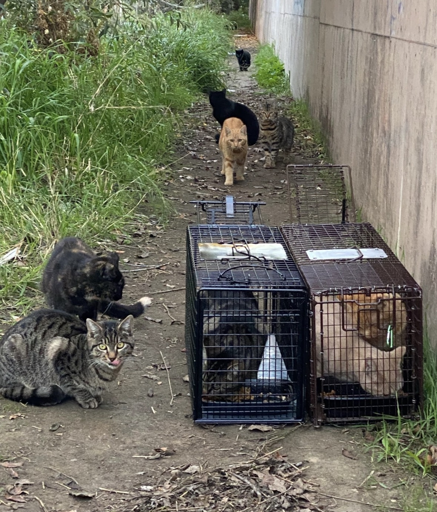
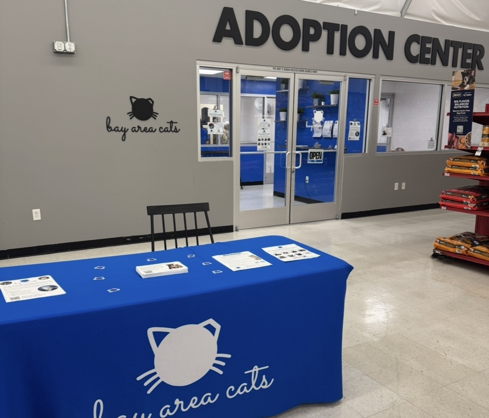
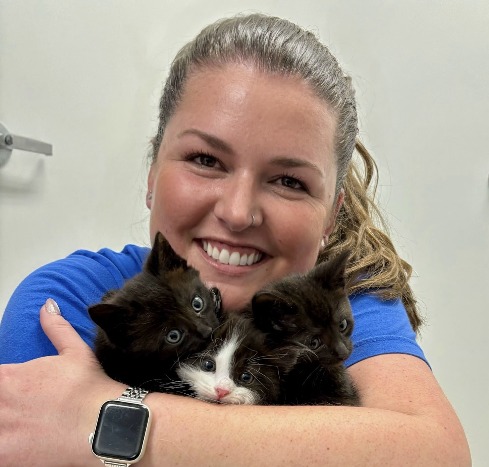
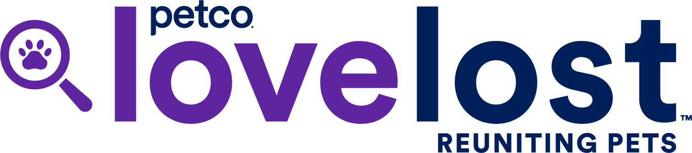

<section id="main" class="wrapper style1">
  <div class="container">
<!-- <h4><i>2530 outdoor cats and 550 pets helped since 2023</i></h4>
<hr class="major" /> -->
    <h3>Support our mission: to decrease the number of unfixed cats in the community</h3>
    <div id="donations">
      <form action="https://www.paypal.com/donate" method="post" target="_top">
      <input type="hidden" name="hosted_button_id" value="3CU9XS5BLTLWE" />
      <button class="donate-button" id="donate-button-home" type="submit">Donate to help save lives</button>
      
    </form>
    <script>
    (function() {
      const btn = document.getElementById('donate-button-home');
      if (!btn) return;

      btn.addEventListener('click', function() {
        if (typeof window.gtag === 'function') {
          gtag('event', 'donate_click', {
            event_category: 'donations',
            event_label: 'homepage'
          });
        }
        // no preventDefault; form opens PayPal in a new tab
      });
    })();
    </script>
    <p>Bay Area Cats is a 501(c)(3) volunteer-run nonprofit focused on prevention. We provide spay/neuter, trap-neuter-return (TNR), and rescue support to reduce overpopulation.</p>

            <h3>Our programs</h3>
      <p>Fill out our <a href="https://bayareacats.org/contact">contact form</a> with the details of your specific situation. Here's how we can help:</p>
      <ul>
        <li>Feral cats in Cupertino, Sunnyvale, and San Jose 95127</li>
        <li>Mom's Last Litter: We'll spay mom, & help find homes for the kittens</li>
        <li>Spaying female pet cats</li>
        <li>Pregnant cats</li>
      </ul>

      	<hr class="major" />

		<div class="row">
			<div class="4u">
				<section class="special box home-link-card">
					<a class="home-link-card-image" href="trapping">
						
					</a>
					<a href="trapping" style="text-decoration:none;color:inherit;">
						<h4>Trapping</h4>
					</a>
					<p>Check out the <a href="trapping">Trapping</a> page for trapping tips and resources.</p>
				</section>
			</div>
			<div class="4u">
				<section class="special box home-link-card">
					<a class="home-link-card-image" href="adoptions">
						
					</a>
					<a href="adoptions" style="text-decoration:none;color:inherit;">
						<h4>Adopt</h4>
					</a>
					<p>Check out our available cats and kittens on our <a href="adoptions">Adoptions</a> page.</p>
				</section>
			</div>
			
			<div class="4u">
				<section class="special box home-link-card">
					<a class="home-link-card-image" href="volunteer">
						
					</a>
					<a href="volunteer" style="text-decoration:none;color:inherit;">
						<h4>Volunteer</h4>
					</a>
					<p>Join our team! Sign up to volunteer at <a href="volunteer">bayareacats.org/volunteer</a>.</p>
				</section>
			</div>
		</div>


          	<hr class="major" />

      <h3>Our impact</h3>
	<iframe class="airtable-embed" src="https://airtable.com/embed/appklgrXgkT9hR2Ts/shr4RCpUUqQAJ2wlL" frameborder="0" onmousewheel="" width="100%" height="950" style="background: transparent; border: 1px solid #ccc;"></iframe>

    <hr class="major" />

      <section class="home-highlight-banner">
        <div class="home-highlight-copy">
          <p class="home-highlight-eyebrow">Lost and found support</p>
          <h2>Reunite lost cats with Petco Love Lost</h2>
          <p class="home-highlight-text">If you have found a cat or are searching for one, start with Petco Love Lost's free national photo-matching tool and report the cat to our team so we can help guide next steps locally.</p>
          <div class="home-highlight-actions">
            <a class="button" href="https://petcolove.org/lost/signup/?utm_medium=referral&utm_source=shelter&redirect=lost-report&utm_campaign=lost-lostfound-shelter-1250492" target="_blank" rel="noopener noreferrer">Search Petco Love Lost</a>
            <a class="button alt" href="contact">Contact Bay Area Cats</a>
          </div>
        </div>
        <div class="home-highlight-art">
          <div class="home-highlight-art-frame">
            
          </div>
        </div>
      </section>


 
      <p></p>
    
    </div>

		<!-- <hr class="major" /> -->

		<!-- <h3>Donations</h3>
		<div id="donations">
  	<p>Our community cats and kittens could use your help. If you would like to get involved in trap-neuter-return (TNR) or fostering cats or kittens, please reach out. Donations of trap bait (wet or dry cat food or tuna), puppy pee pads, or other cat supplies are gladly accepted. You can also donate via <a target="_blank" href="https://www.paypal.com/donate/?hosted_button_id=85C7UMCXTS2GC">PayPal</a> or <a href="https://venmo.com/code?user_id=3668070472091276232">Venmo</a>, and through our <a href="https://www.chewy.com/g/bay-area-cats_b103747788?utm_medium=email&utm_source=transactional&utm_campaign=SHELTER_BUSINESS_PAGE_APPROVED#wish-list">Chewy</a> or <a href="https://a.co/4CxxGb9">Amazon Wishlist</a>. Contact us at <a href="mailto:info@bayareacats.org">info@bayareacats.org</a> with any questions or if you want to get involved. Bay Area Cats is a 501(c)(3) non-profit organization.
  	</p>
  	</div> -->
	</div>
</section>

				
			
		
